九尾狐
南山经狐形而有九尾，叫声像婴儿；青丘山的记载称其能够食人。
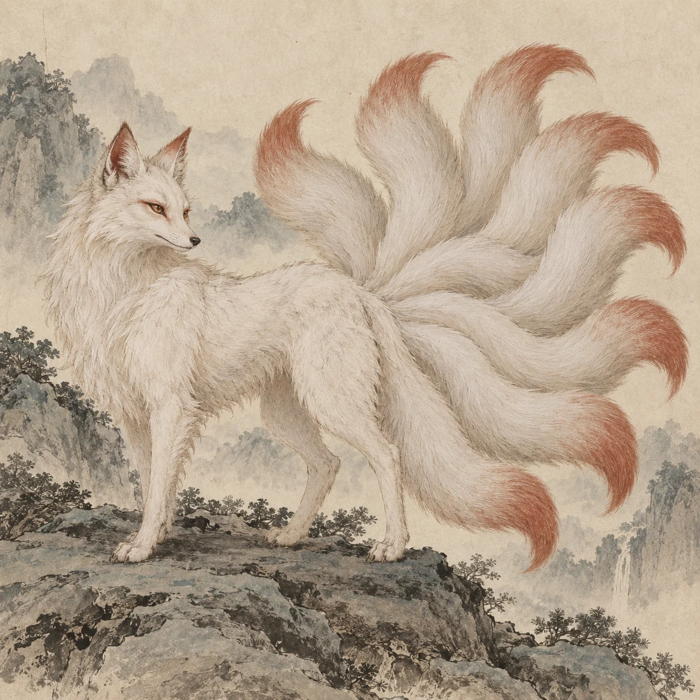
南山经 · 第 008 号九尾狐「有兽焉，其状如狐而九尾。」
狐形而有九尾，叫声像婴儿；青丘山的记载称其能够食人。
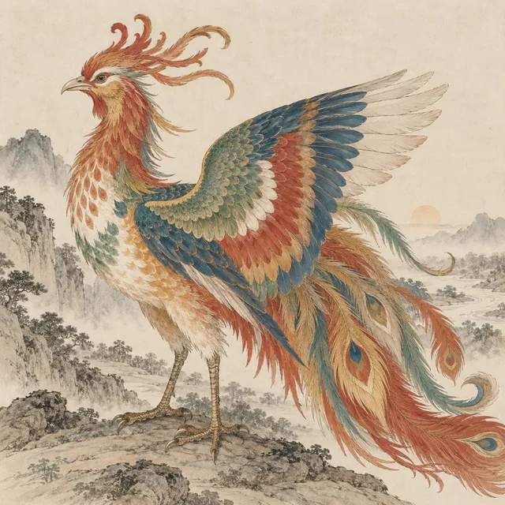
NO. 020原文作“凤皇”：鸡形、五彩，头、翼、背、胸、腹的花纹分别对应德、义、礼、仁、信；出现象征天下安宁。
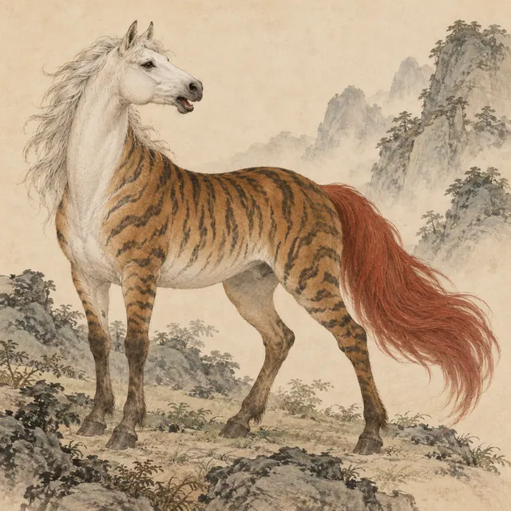
NO. 002马的身体，白色头部、虎纹和红尾；叫声像人在歌唱。
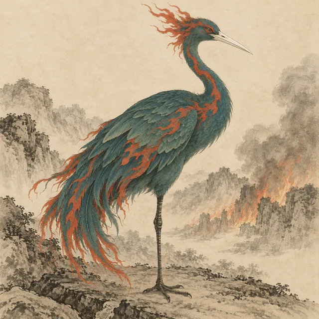
NO. 057鹤形，只有一条腿，青身、红纹、白嘴；与火灾相联系。
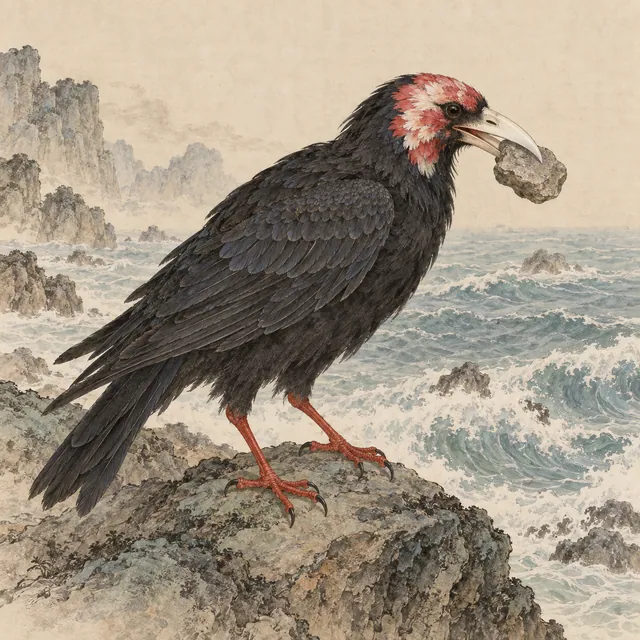
NO. 117乌鸦形，花头、白嘴、红足；炎帝之女溺海后所化，常衔木石填海。
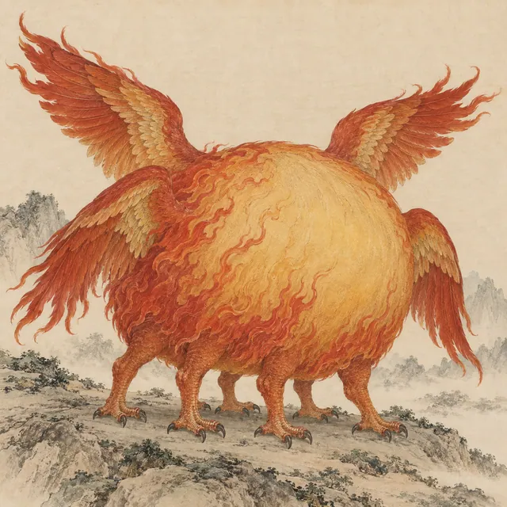
NO. 239形如黄囊，赤红如火，六足、四翼，没有面目，却懂歌舞。
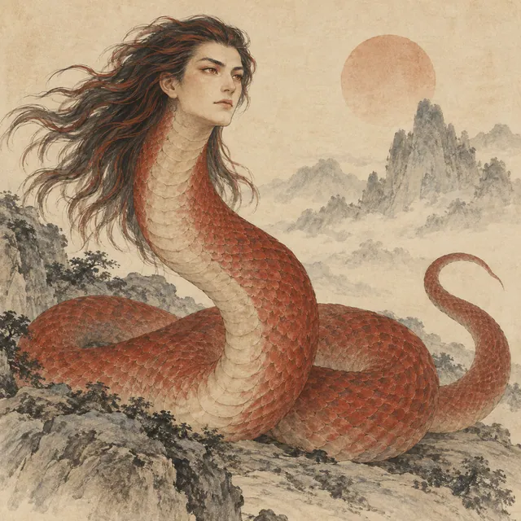
NO. 244又与烛阴记载相联系：人面蛇身，赤色，睁眼为明、闭眼为暗。
 NO. 211
NO. 211能蓄水、参与黄帝与蚩尤之战，与降雨有关；常见有翼形象参考传统注释，正文该处未详翼形。
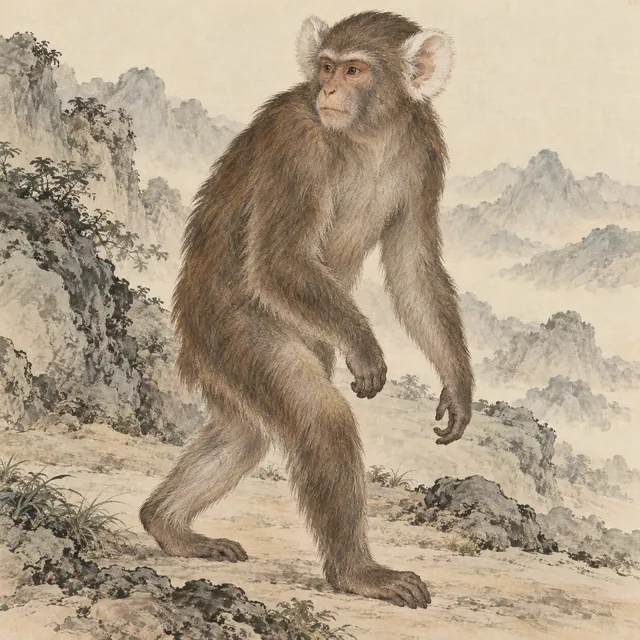
NO. 001形似猿猴，白色耳朵，既能伏行，也能像人一样行走。
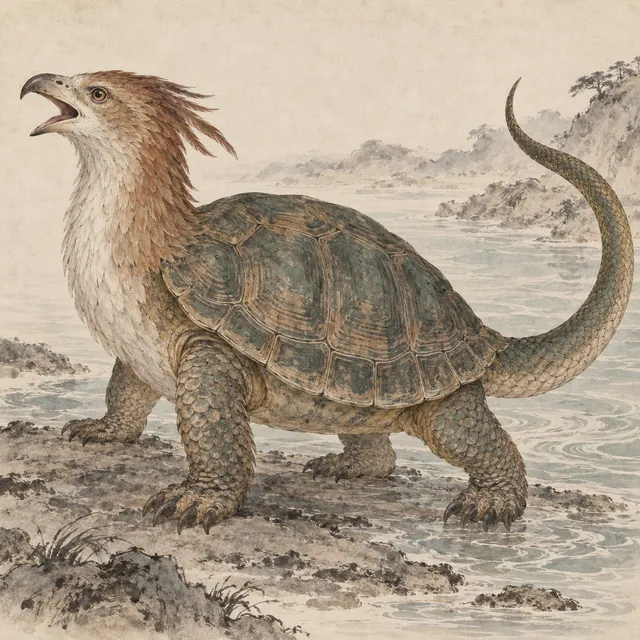
NO. 003龟身、鸟首、蛇尾，叫声像劈开木头。
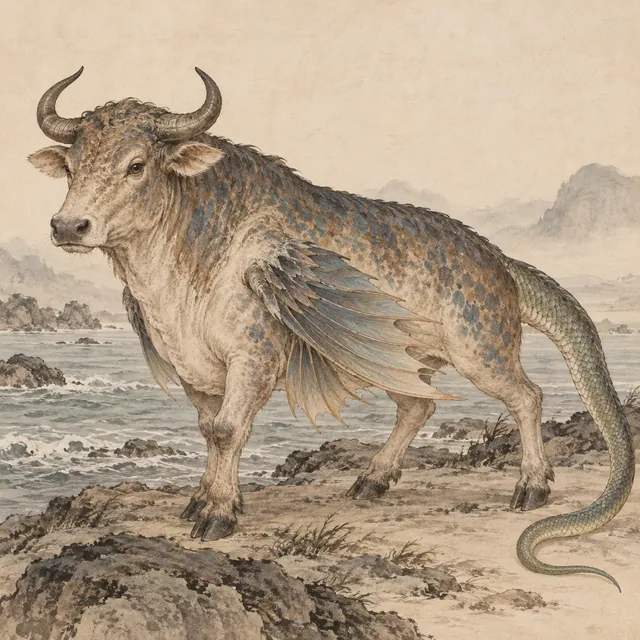
NO. 004牛形的怪鱼，蛇尾，肋下生翼，能够居于陆地；书中称其冬死夏生。
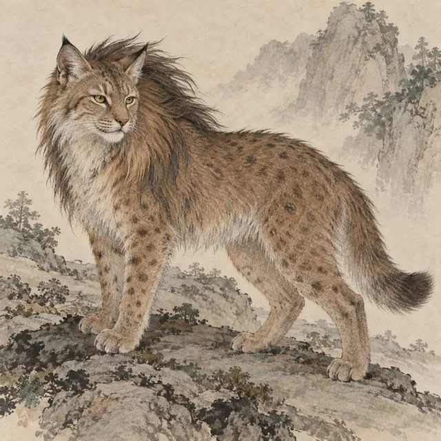
NO. 005形似狸，长有鬣毛；原文称它“自为牝牡”。
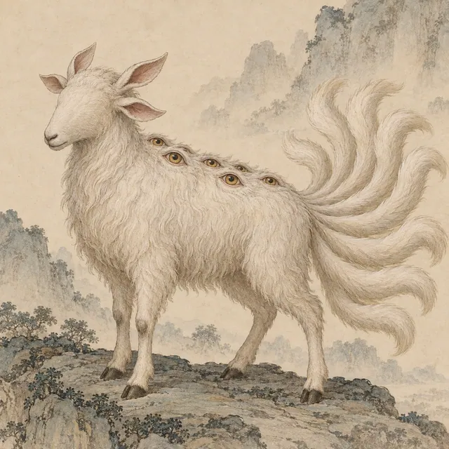
NO. 006羊形，九条尾巴、四只耳朵，眼睛长在背上。
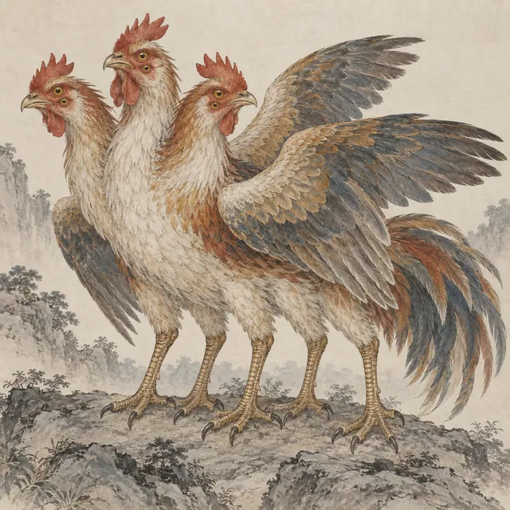
NO. 007鸡形怪鸟，三个头、六只眼、六条腿、三只翅膀。
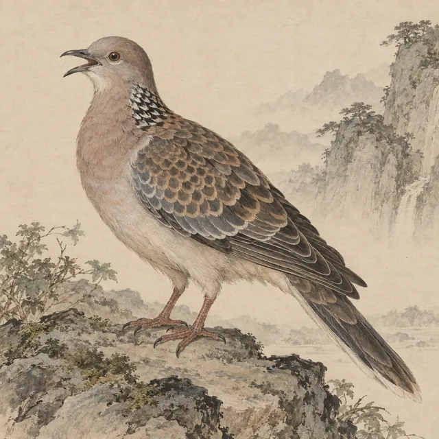
NO. 009形似斑鸠，叫声像人的呵斥声；书中赋予它使人不惑的能力。
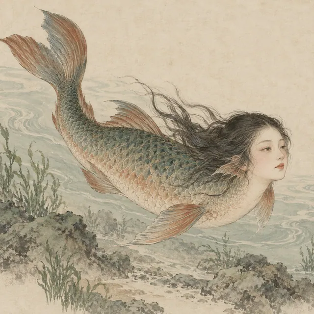
NO. 010鱼身人面，叫声像鸳鸯，生活在青丘山的英水中。
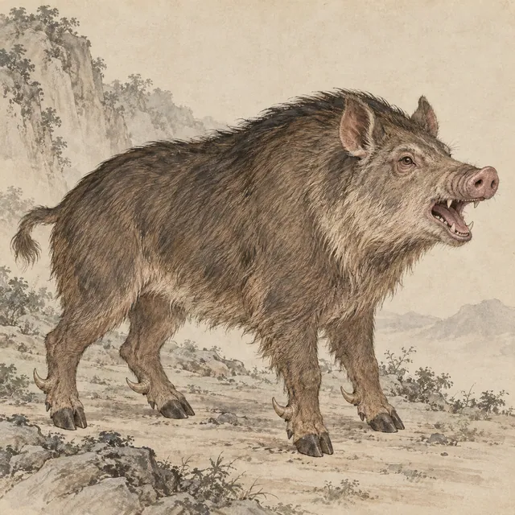
NO. 011形似猪，足有距，叫声像犬吠；其出现与大兴土木相联系。
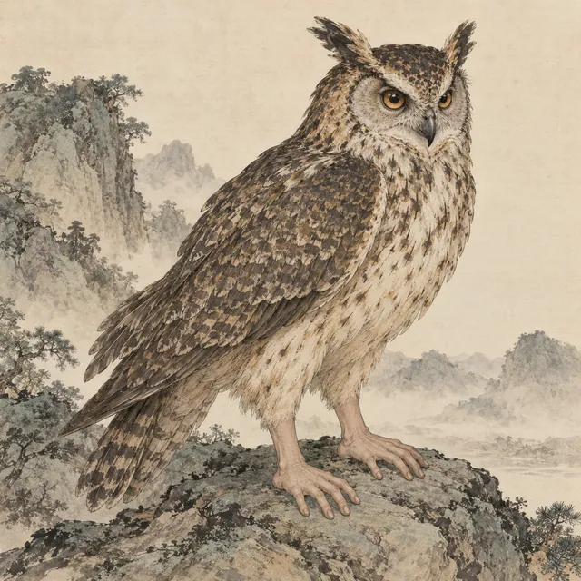
NO. 012鸱形怪鸟，足像人的手，叫声自呼其名。
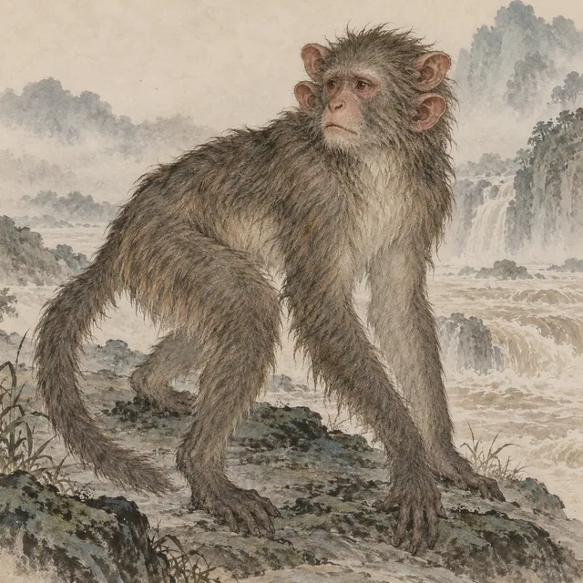
NO. 013猿猴形，有四只耳朵，叫声像人的呻吟；其出现与大水相联系。
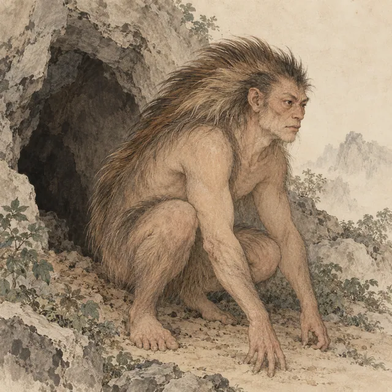
NO. 014人形而长猪鬣，穴居、冬眠，叫声像砍木头。
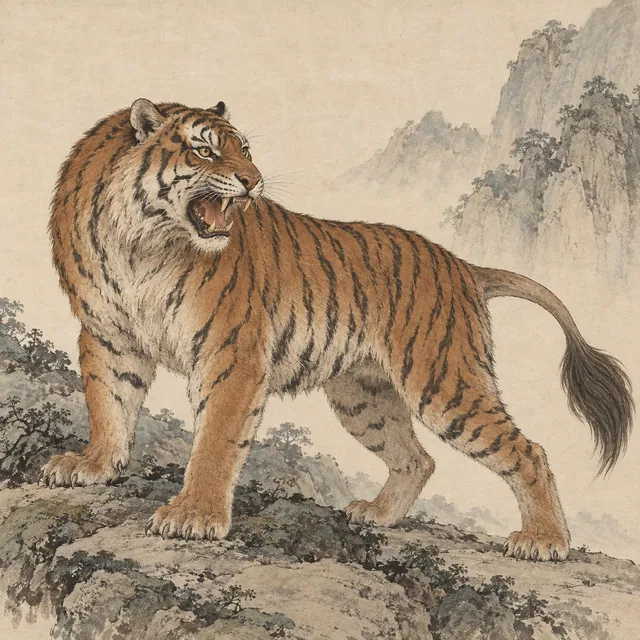
NO. 015虎形而有牛尾，叫声像犬吠，是书中记载的食人兽。
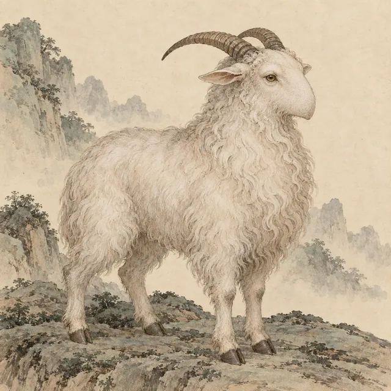
NO. 016羊形而没有嘴；原文称其不可杀。
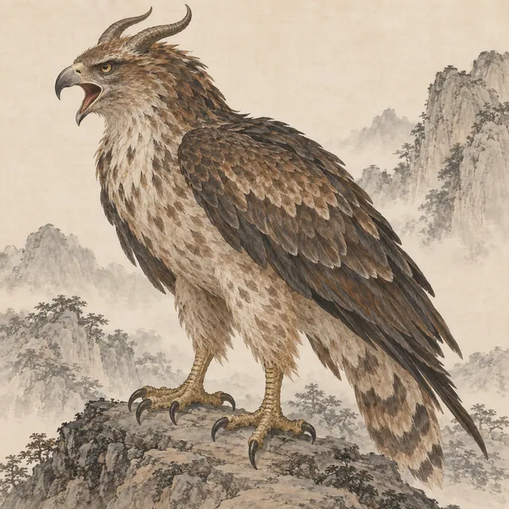
NO. 017雕形而有角，叫声像婴儿；原文将其列作食人的兽。
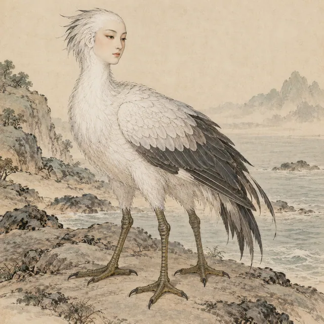
NO. 018水鸟形，白色头部、人面、三只脚，叫声自呼其名。
换个名字或形貌关键词，再去山海间找找。
已展卷 24 / 266
不必知道名字。让好奇心带路，翻开山海的另一页。